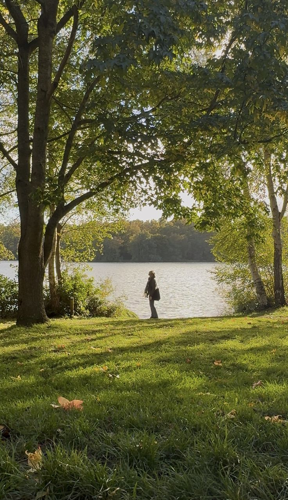

Getting some fresh air and taking a walk, while listening to joyful music or enjoying the scenery has many benefits, including increased blood circulation. Improved sleep, better endurance, stress relief, a better mood, reduced tiredness, and improved cardiovascular health are just a few of the many benefits you will feel.
How to start, you may ask?
Stretch as your short warm-up, start at a relaxed pace and give yourself reachable goals. Ask a friend or join a group if you would prefer not to walk by yourself and find places that you like, such as parks or busy city streets. Music will help you regulate your mood and manage difficult emotions. Here are some song suggestions: